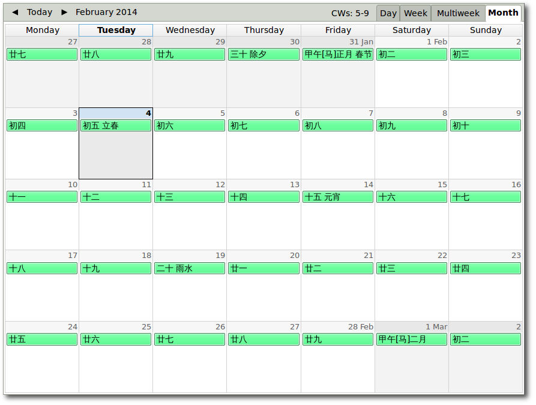

iCalendar格式的中国农历、节气、及传统节日
iCalendar是一种通用的日历交换格式，很多软件和设备，比如google calendar, apple calendar, thunderbird + lightning插件, iphone/ipad, 安卓都支持。
以前订过iCalendar格式农历日历，但慢慢地它们都停止了更新。感谢香港天文台为公众提供了从1901年到2100年间两百年的农历-公历对照表，也就是这里用到的数据。

用法:
下载包括前年、今年以及明年三年日历的ics文件，把它加入到你最常用的软件，不过最好直接在软件里订阅这个ics文件的链接，这样以后可以自动更新。
苹果设备上应该是:
设置 => 邮件、通讯录、日历 => 添加账户 => 其它 => 日历 添加已订阅日历
如果在Mac的iCal里订阅到iCloud，这个日历还可以自动推送到所有使用那个iCloud账户的ios设备。
生成更长时段农历
如果需要更长时段的农历，请到农历项目主页下载lunar_ical.py
直接运行./lunar_ical.py会从香港天文台抓取1901到2100年间所有数据，然后生成上面那个前后三年时段的农历ics文件；
使用参数--start和--end指定需要的起至日期, 例如:
./lunar_ical.py --start=2010-05-01 --end=2021-12-31 Powered by